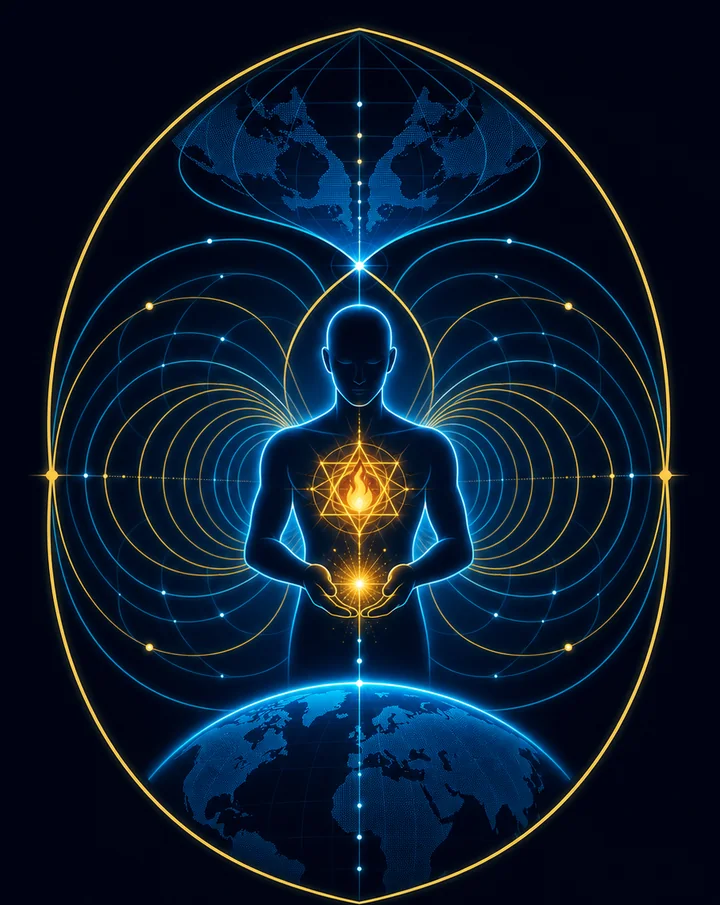
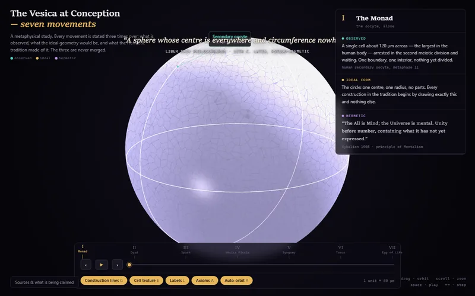
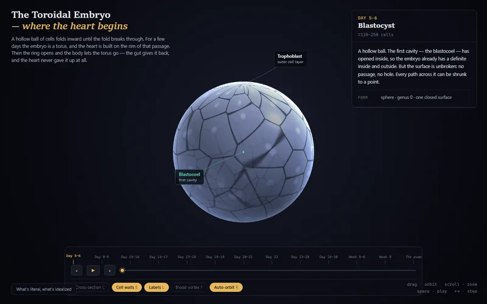
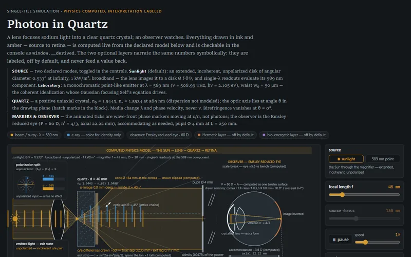
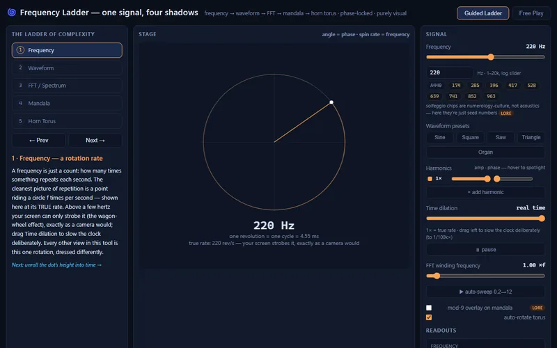
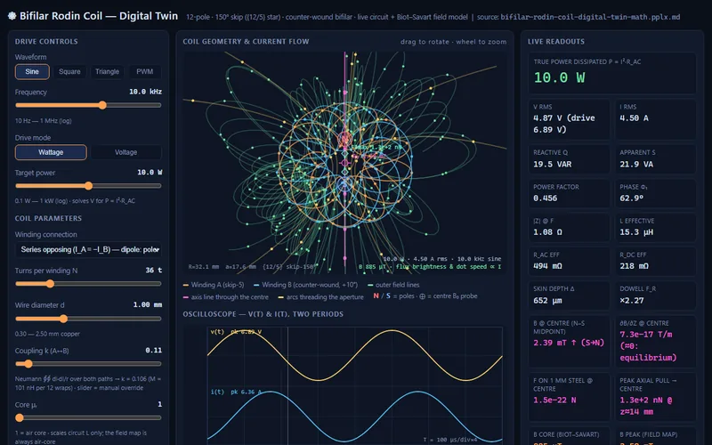
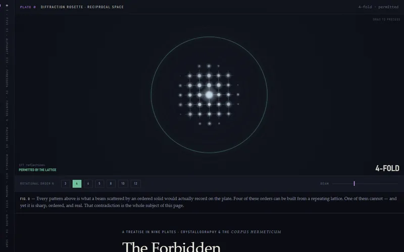

Promethean Theoria
let all who enter bring an empty cup
Six self-contained studies at the seam between measured physics and the Hermetic tradition. Each page follows one rule: the physics is computed live, and the interpretation is labeled — you can always tell which register a claim belongs to. Everything runs in your browser, nothing to install; the simulations are best experienced on a desktop screen.

The Vesica at Conception — seven movements
A metaphysical study of fertilisation in seven movements, from the Monad — the oocyte alone —
to the Egg of Life. Every movement is told three times and never merged: observed biology with
citations, the ideal geometry, and what the Hermetic tradition made of it.

The Toroidal Embryo — where the heart begins
Weeks 1–4 of human embryology in interactive 3D: a hollow ball of cells folds inward until,
for a few days, the embryo is genuinely a torus — and the heart is built on the rim of that passage.
Scrub ten stages from blastocyst to the first beat; a notes panel keeps textbook fact separate from idealized form.

Photon in Quartz — computed optics, labeled interpretation
A complete optical bench drawn live: sodium light focused into a birefringent quartz crystal, split
into o- and e-rays, and traced all the way to a model human eye. Every number on screen is computed
from the declared physics; two symbolic overlay layers stay off until you ask, and never feed a value back.

Frequency Ladder — one signal, four shadows
One signal seen four ways, all phase-locked: a spinning point unrolls into a waveform, the FFT recovers
its recipe, the spectrum blooms into a polar mandala, and a horn torus carries the whole thing in 3D.
Climb the guided five-rung ladder, or open Free Play and stack harmonics yourself.

Bifilar Rodin Coil — digital twin
A 12-pole, counter-wound bifilar Rodin coil driven like bench hardware: set waveform, frequency and
power, then read the oscilloscope, the impedance sweep, and a numerically integrated Biot–Savart
field map. The model equations — and an honest section on what to trust — are right on the page.

The Forbidden Symmetry — mineral lattices & the Platonic solids
A treatise in nine interactive plates, spanning crystallography and the Corpus Hermeticum:
why exactly five Platonic solids exist, which of them can build matter, why five-fold symmetry is
impossible in any repeating crystal — and the 1982 aluminium alloy where it turned up anyway.
Every claim wears a chip: theorem, measured, tradition, or false.